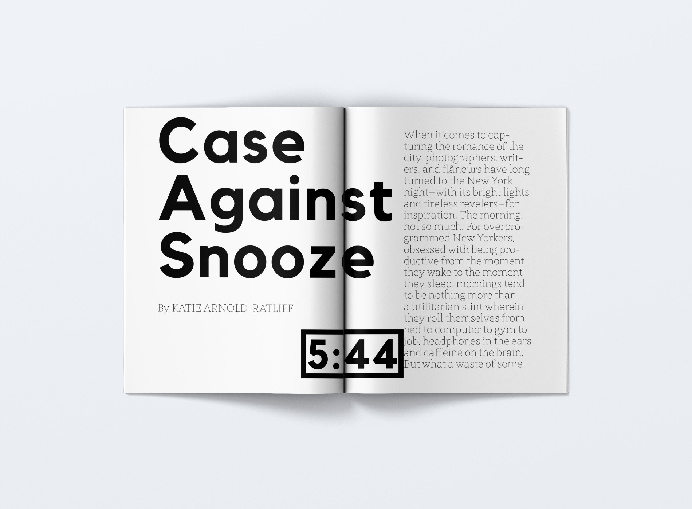
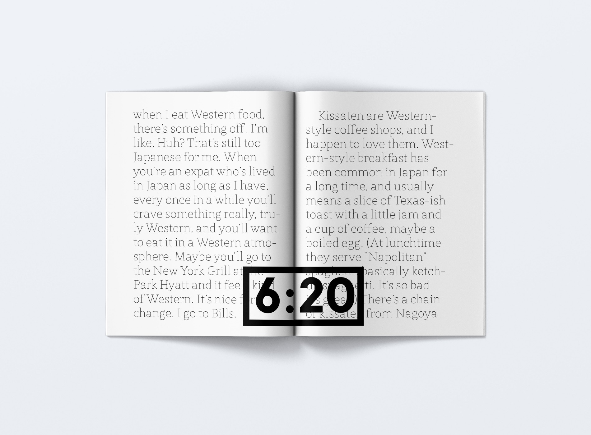
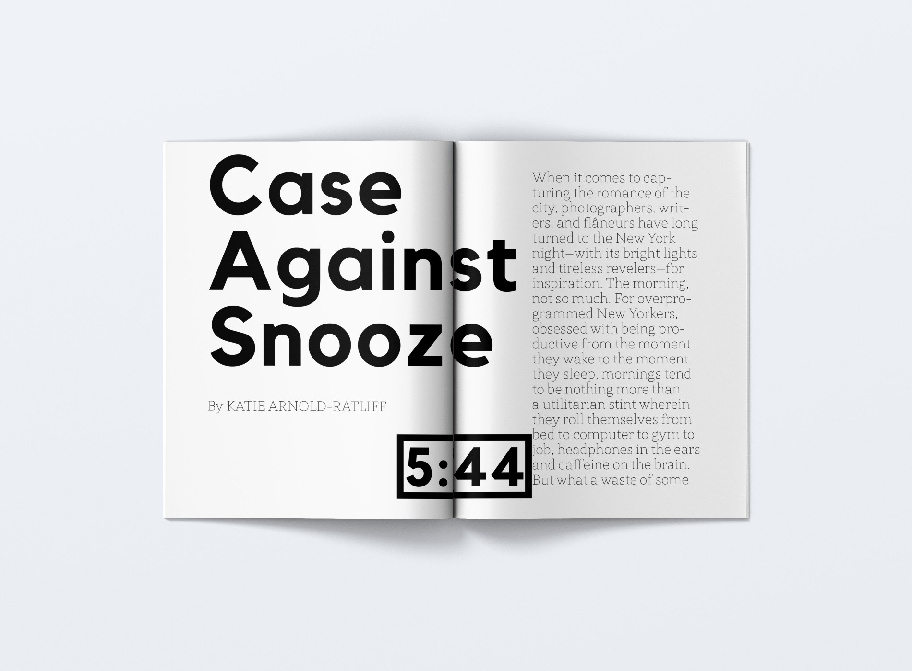
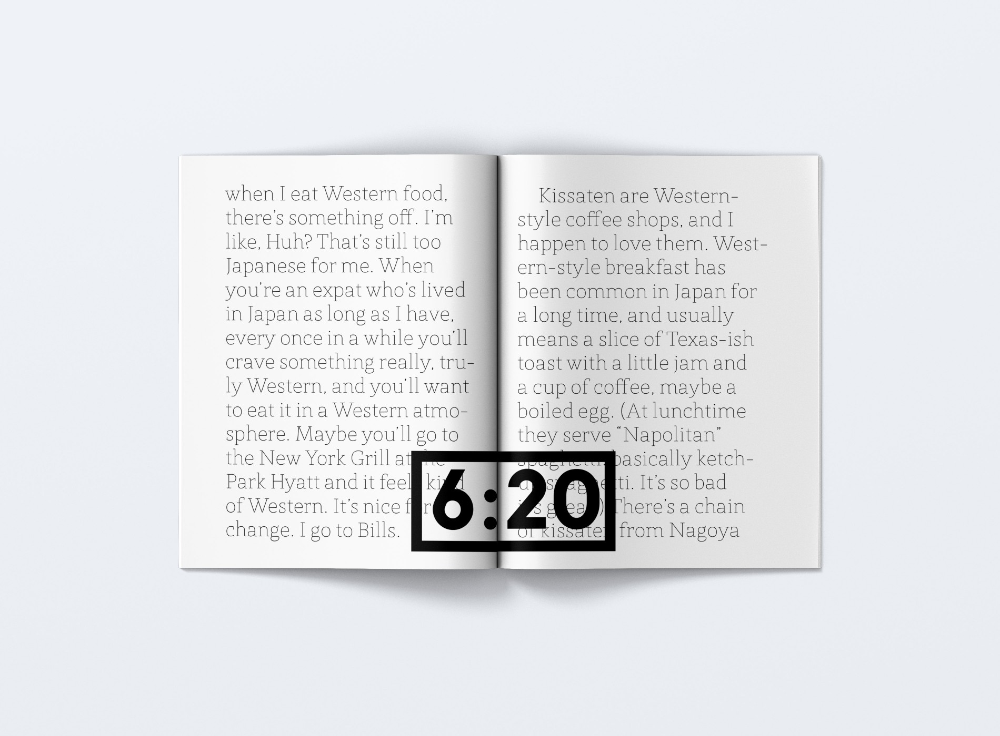
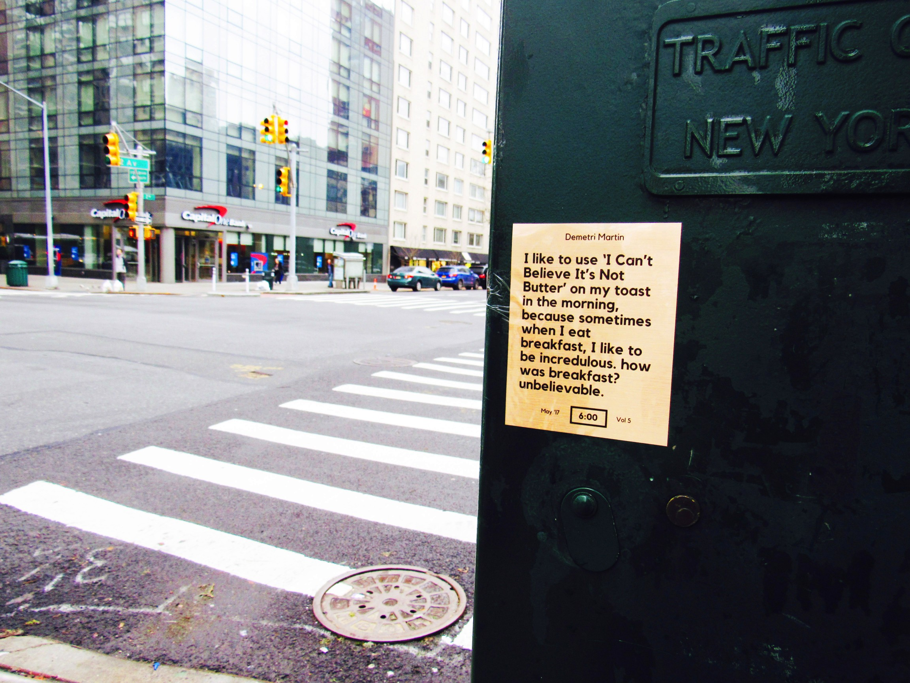
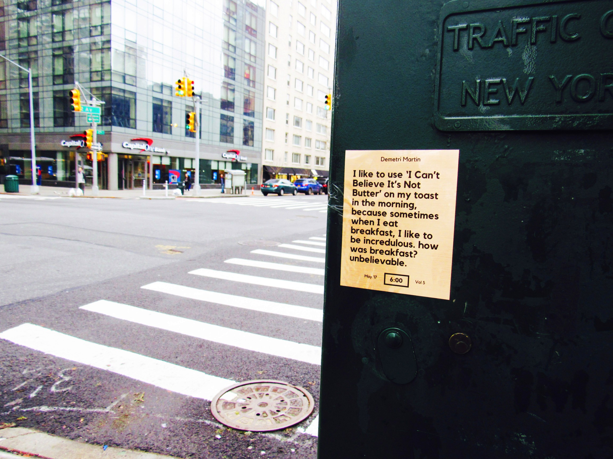

4am Magazine
EDITORIAL
4am Magazine is an editorial trio that explores and glorifies morning culture.
I masterminded the concept, curated the content and designed the visual system, intending to breathe intrigue and excitement into the infamous time of the day.
The monthly publication celebrates unorthodox perspectives on morning tropes through offbeat articles and bold artwork.
An abstract alarm clock replaces the page numbers and the magazine 'wakes up with you' as the text grows larger and larger with each page turn.
In the end, it reaches 8 o'clock and the alarm clock 'rings'. This is intended to make the user contrast the intruiging and valuable aspects of the morning with it's transcient nature.
An attention-grabbing collection of stickers serves as the yearly publication,
expressing similar eccentric and humorous themes through short intriguing phrases meant to
remind readers of their adoration for morning culture & help spread the message to others throughout the year.
If you happen to be on the Upper East Side, keep a look out for them. They are scattered on mailboxes & stoplight posts on 1st and 2nd Ave between 80th and 86th Street. The metallic gold foil catches the sun in a nice way when the sun is out,
helping them catch the eye of busy New York walkers.
Lastly, the daily publication is an app that gifts the reader with a platform to share their personal morning culture with a community that loves the morning as much as they do.
The catch? They can only post content from 4am-10am, increasing the scarcity value and attracting genuine morning fanatics.

 





 
